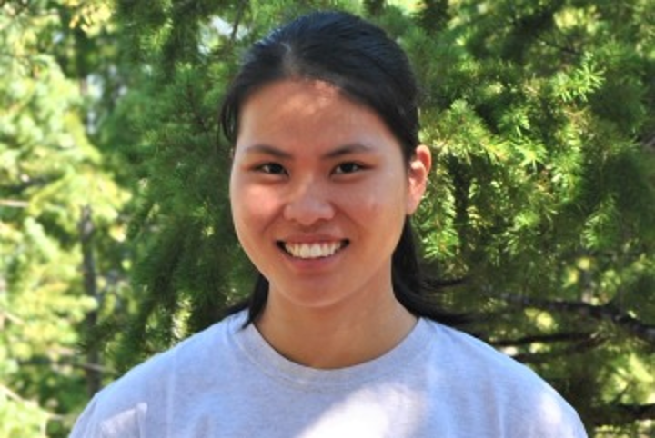
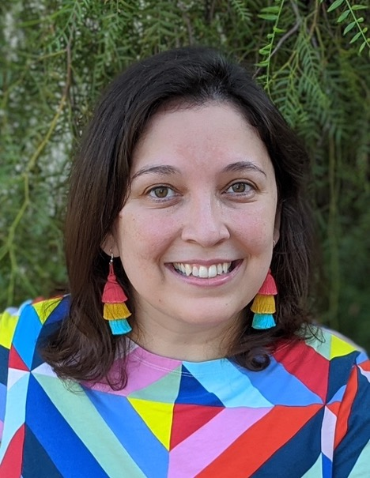

About
Our Team
Chinese Linguistics PhD Candidate
Data Science Master’s Student
Data Science Ambassador - College of Humanities 2022-2023
School of Information | PhD Student
Research: Probabilistic Inference, Knowledge Representation, Social History
Data Science Ambassador, College of Social and Behavioral Science, 2022 - 2023

Applied Mathematics PhD Student
Data Science | Data Analytics Emphasis

School of Natural Resources and the Environment | PhD Student
Research: Rangeland and restoration ecology, invasive species management
Data Science Ambassador - College of Agriculture and Life Sciences 2022-2023
Clinical Translational Sciences MS candidate
Data Science Ambassador - College of Medicine 2022-2023
Data Specialist, Petersen HIV Clinics
Specializes in Epidemiology/Biostatistics, Program Monitoring & Evaluation

Assistant Professor of Practice
Computer Science, University of Arizona
Data Science Ambassadors Program Co-Director
Data Science Institute
Assoc. Research Professor (FSC), Knowledge Exchange for Resilience
Asst. Research Professor, School of Geographical Sciences & Urban Planning
Arizona State University